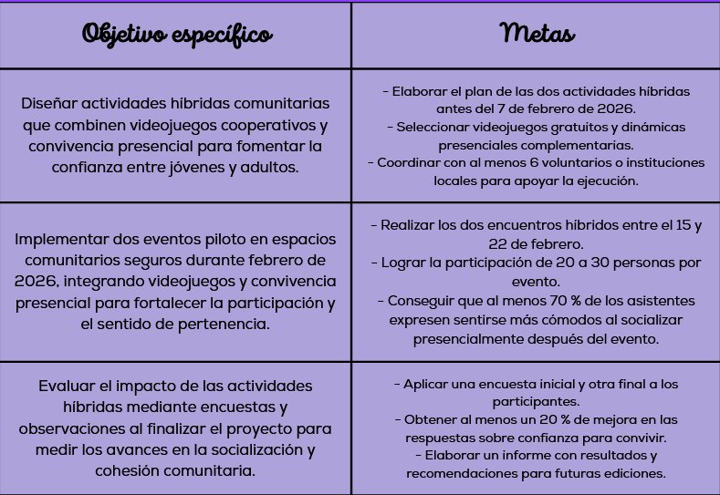

El proyecto “Juntos Otra Vez: Videojuegos como puente social” surge como respuesta a las secuelas sociales que dejó la pandemia,
especialmente la dificultad para convivir y la pérdida de confianza al interactuar de manera presencial.
Este tema es relevante porque muchas personas, en especial jóvenes y adultos, han desarrollado ansiedad social y prefieren comunicarse solo de forma virtual.
Su propósito principal es fortalecer la cohesión comunitaria y promover la socialización presencial post-pandemia mediante actividades híbridas
que combinen videojuegos cooperativos con convivencias presenciales seguras y accesibles.
Fuente: García Ramírez, Bertha. (2025, 18 de octubre). Fase 1: Planificación. Objetivos-metas.
Módulo 23. Prepa en Línea SEP. Recuperado de
Google Drive.
🎯 Objetivos y Metas
Se presentan los objetivos generales y específicos del proyecto junto con sus metas,
orientadas a fortalecer la convivencia social mediante la tecnología y la colaboración.

Fuente: García Ramírez, Bertha. (2025, 18 de octubre). Fase 1: Planificación. Objetivos-metas.
Módulo 23. Las tecnologías emergentes en la administración y gestión. Prepa en Línea SEP.
Recuperado de
Google Drive.
💬 Justificación
La justificación explica las razones por las que se seleccionó este tema, así como su importancia social y emocional.
Se analizan los beneficios esperados, la viabilidad del proyecto y el impacto en la comunidad.
Escucha la justificación:
Fuente: García Ramírez, Bertha. (2025, 18 de octubre). Fase 2: Planificación. Justificación.
Módulo 23. Prepa en Línea SEP. Recuperado de
Google Drive.
📅 Planificación de Actividades
Las actividades del proyecto se organizan en tres etapas: preparación, desarrollo y evaluación.
Actividad
Duración
Inicio
Conclusión
Tareas
Recursos materiales
Recursos tecnológicos
Recursos financieros
Responsables
Planear encuentros
2 días
10-feb-26
11-feb-26
Definir dinámicas, juegos y espacios
Hojas, marcadores, silla, mesa, laptop
Internet
Dinero en efectivo
Líder del proyecto, colaborador
Verificar disponibilidad
2 días
16-feb-26
17-feb-26
Confirmar renta de consolas y permisos
Formato impreso
Gmail, redes sociales
Dinero en efectivo
Apoyo logístico
Preparar espacio físico
1 día
08-mar-26
08-mar-26
Montar, instalar y probar equipos
Mesas, sillas, consolas, proyector
Internet y software de audio
Dinero en efectivo
Líder del proyecto, ingeniero en sistemas
Evento híbrido
1 día
08-mar-26
08-mar-26
Supervisar torneo y convivencia
Consolas, bocinas, premios
Internet, Discord
Dinero en efectivo
Equipo completo
📊 Diagrama de Gantt
Fuente: García Ramírez, Bertha. (2025, 01 de noviembre). Fase 5: Control. Diagrama de Gantt para Gestión del Proyecto.
Módulo 23. Prepa en Línea SEP. Recuperado de
Google Drive.
📩 Contáctanos
Si deseas conocer más sobre “Juntos otra vez: videojuegos como puente social”, colaborar o proponer ideas, ¡escríbenos!